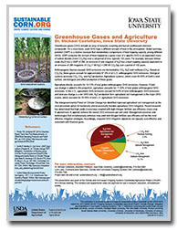

Extended Crop Rotations
Photo courtesy NRCS |
Extended crop rotations have the potential to build soil organic matter, increase carbon sequestration, improve soil quality and minimize greenhouse gas emissions. Increasing the diversity of cropping systems has the potential to maximize resiliency of the corn-based system under variable weather conditions. Much of the Corn Belt states have a significant percentage of agricultural land area in a corn-soybean crop rotation. When corn prices increase, corn-soybean rotations are often replaced with continuous corn. Currently, approximately 20 percent of all acres in the Midwest Corn Belt are in continuous corn. This number is likely to increase in the future as demand for corn grows. This project will use data collected from long-term (20 years) established rotation experiments and by performing a set of new experiments to compare no rotation (continuous corn), two-crop rotations (corn-soybean), and extended rotations including a third crop (e.g., winter wheat or oats) or another crop harvested multiple years (i.e., alfalfa).
Resources:
|  | |
|
|
Dr. Michael Castellano, Assistant Professor, Iowa State University, explains how cost-effective management practices and technologies can simultaneously enhance crop yield and nitrogen fertilizer use efficiency. This presentation was made at this project's 2012 Annual Meeting. |
Speed Science: Soil Carbon Cycle
|
Dr. Sasha Kravchenko, Associate Professor, Michigan State University, discusses soil organic carbon cycle and crop management practices that increase and store carbon in the soil, while improving soil quality. This presentation was made at this project's 2012 Annual Meeting. |
Speed Science: Soil Nitrogen Cycle
|
Dr. John Sawyer, Professor, Iowa State University, discusses climate influence on the soil nitrogen cycle. This presentation was made at this project's 2012 Annual Meeting. |